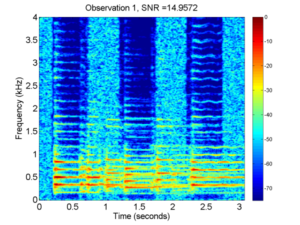
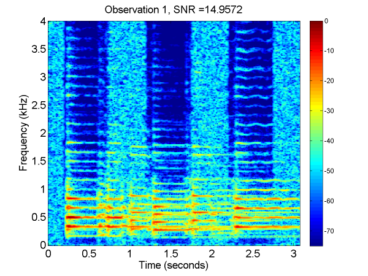
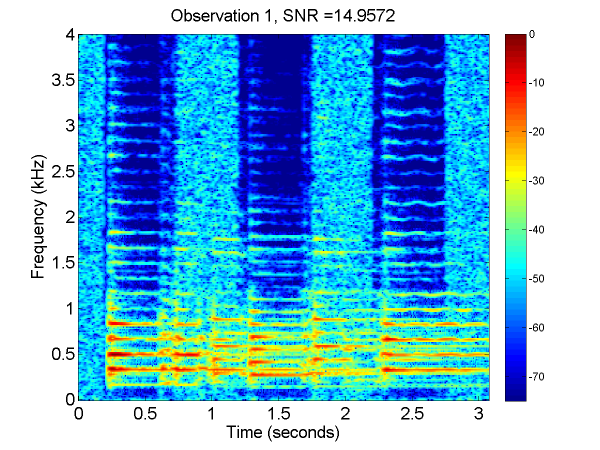

Home Combining Multiple Observations of Audio Manuscript "Combining Multiple Observations of Audio", İ. Bayram, SPIE Wavelets and Sparsity XV, 2013. Experiment-1 Original Signal Observation-1  Observation-2 Reconstruction without Regularization Reconstruction with Regularization Experiment-2 Observation-1 Observation-2 Observation-3 Reconstruction
"Combining Multiple Observations of Audio", İ. Bayram, SPIE Wavelets and Sparsity XV, 2013.
Observation-1  Observation-2 Reconstruction without Regularization Reconstruction with Regularization
 Observation-2 Reconstruction without Regularization Reconstruction with Regularization
Reconstruction without Regularization Reconstruction with Regularization
Reconstruction with Regularization
Observation-2 Observation-3 Reconstruction
Observation-3 Reconstruction
Reconstruction